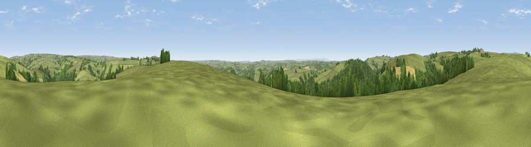

Viewpoint near Dulverton
#14165 in England · top 27% of its area beats it · near DulvertonThe view, rendered

A 360° render of this exact spot computed from the terrain model, tree cover and land cover — summer colours, afternoon light, calibrated against photographs of famous viewpoints. Real trees, hedges and buildings will differ in detail.
The panorama
Grey silhouette: terrain skyline in each direction (720 bearings, Earth curvature and refraction included). Dashed green: skyline with trees (+15 m) and buildings (+8 m) as obstacles. Blue strip: how far the ground is visible on each bearing.
Where the view opens
Wedge length = distance to the farthest visible ground on that bearing (vegetation-aware). Rings at 10, 25 and 50 km.
What fills the view
72% grassland · 24% woodland · 4% cropland
Angular shares of the visible panorama (visual magnitude), not map area. Landscape diversity 0.31 (0–1 Shannon).
Key numbers
More beautiful places nearby
The staircase of upgrades: each row has a higher view potential than everything closer. Driving times are estimates from straight-line distance, calibrated against real road routing — check an actual route before setting out.
| Place | Direction | Drive | Score |
|---|---|---|---|
| Court Down | SE · 0 km | ~1 min | 63.2 |
| Viewpoint near Skilgate | ESE · 5 km | ~11 min | 72.5 |
| Viewpoint near Luxborough | NNE · 8 km | ~16 min | 73.5 |
| Viewpoint near Luccombe | NNW · 12 km | ~22 min | 84.5 |
| Viewpoint near Luxborough | NE · 13 km | ~24 min | 85.5 |
| Viewpoint near Porlock | NNW · 18 km | ~31 min | 86.3 |
| Selworthy Beacon | N · 18 km | ~31 min | 88.7 |
| Holdstone Hill | WNW · 34 km | ~52 min | 90.2 |
51.05791, -3.55134 · source: screening · position refined by local search. Computed location — check access rights before visiting.